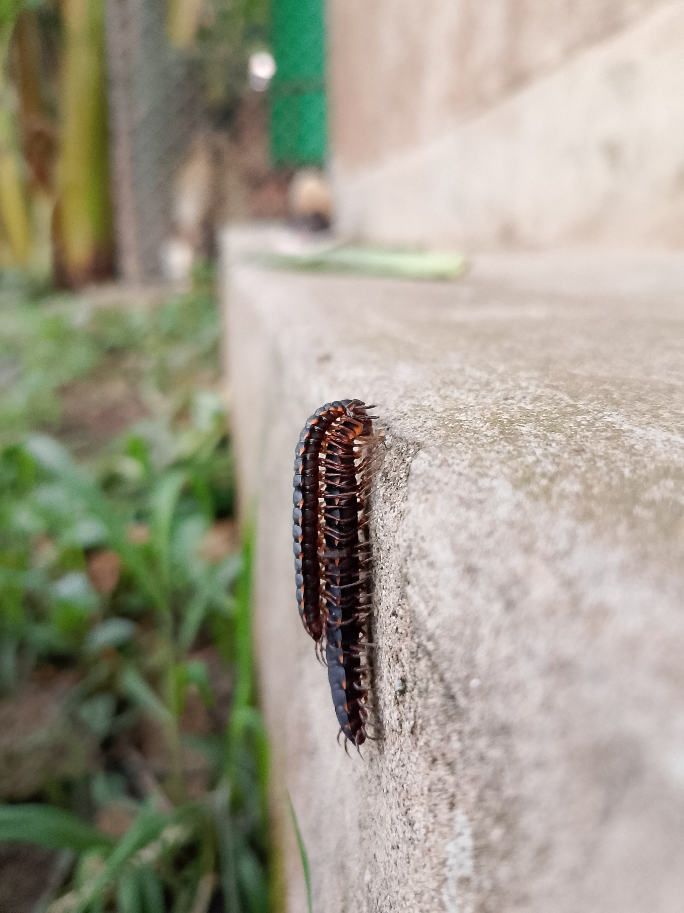

Everything You Need to Know About Millipedes
Discover fascinating facts about these many-legged decomposers that play a vital role in Nepal's ecosystems.
Jump to a question:
- What are millipedes?
- How many legs do millipedes have?
- What do millipedes eat?
- Where do millipedes live?
- Are millipedes harmful to humans?
- How do millipedes defend themselves?
- How do millipedes reproduce?
- Why do I find millipedes in my house?
- Do millipedes play a role in the ecosystem?
- Can millipedes be kept as pets?
What are millipedes?
Millipedes are arthropods belonging to the class Diplopoda. They are characterized by having two pairs of jointed legs on most body segments. With over 12,000 species worldwide, they are one of the most diverse groups of organisms on Earth. In Nepal, we have documented numerous species ranging from the lowland Terai to the high Himalayas.
How many legs do millipedes have?
The number of legs millipedes have can vary significantly, ranging from 30 to over 750 legs depending on the species. Despite their name meaning "thousand feet," no millipede species actually has 1,000 legs - the record holder is Illacme plenipes with up to 750 legs. Most common species have between 80 and 400 legs.
What do millipedes eat?
Millipedes are detritivores, meaning they primarily feed on decomposing plant material, dead leaves, and other organic matter. Some may also consume fungi and other plant-based materials. They play a crucial role in breaking down leaf litter and recycling nutrients in forest ecosystems. In Nepalese forests, they help create rich organic soil by processing fallen leaves.
Where do millipedes live?
Millipedes are typically found in moist environments such as forest floors, leaf litter, under rocks, and decaying logs. They prefer dark, humid conditions. In Nepal, they can be found from the lowland Terai forests (around 60m elevation) up to high Himalayan regions (over 4000m). Different species have adapted to specific elevation zones and habitat types.
Are millipedes harmful to humans?
Millipedes are generally harmless to humans. They do not bite or sting, but some species can release a defensive chemical that may cause mild skin irritation or allergic reactions in some people. It is always best to wash your hands after handling them. Unlike centipedes, millipedes are not venomous and pose no serious threat to humans or pets.
How do millipedes defend themselves?
Millipedes have several defense mechanisms. They can curl into a tight coil to protect their soft underbelly (like a spiral). Many species also secrete toxic or foul-smelling chemicals (including hydrogen cyanide and benzoquinones) from glands along their body to deter predators. This is why they sometimes have an unpleasant smell when handled. Their hard exoskeleton also provides protection.
How do millipedes reproduce?
Millipedes reproduce by laying eggs. Males transfer sperm to females using specialized limbs called gonopods (modified legs on the 7th segment). Females lay eggs in the soil or other concealed, moist environments. Some species even build nests and guard their eggs until they hatch. The young hatch with only three pairs of legs and add more segments and legs with each molt.
Why do I find millipedes in my house?
Millipedes may enter homes seeking moisture and shelter, especially during dry weather or heavy rain. They are usually found in basements, bathrooms, and other damp areas. They are attracted to decaying organic matter and moisture. To prevent them, seal cracks around doors and windows, reduce humidity, remove leaf litter near your home, and fix any leaky pipes.
Do millipedes play a role in the ecosystem?
Yes, millipedes play a crucial role in the ecosystem. They are essential decomposers that break down decaying plant material and recycle nutrients back into the soil, aiding in soil formation and fertility. They help create rich topsoil, improve soil structure, and support plant growth. In Nepalese forests, they are vital members of the detritivore community, processing vast amounts of leaf litter each year.
Can millipedes be kept as pets?
Yes, some species of millipedes are kept as pets. They require a habitat with high humidity (70-80%), appropriate substrate (like coconut fiber, peat moss, or leaf litter), and a diet of decaying plant matter, fruits, and vegetables. Giant African millipedes (Archispirostreptus gigas) are popular pet species. However, we encourage observing them in their natural habitat rather than removing them from the wild.